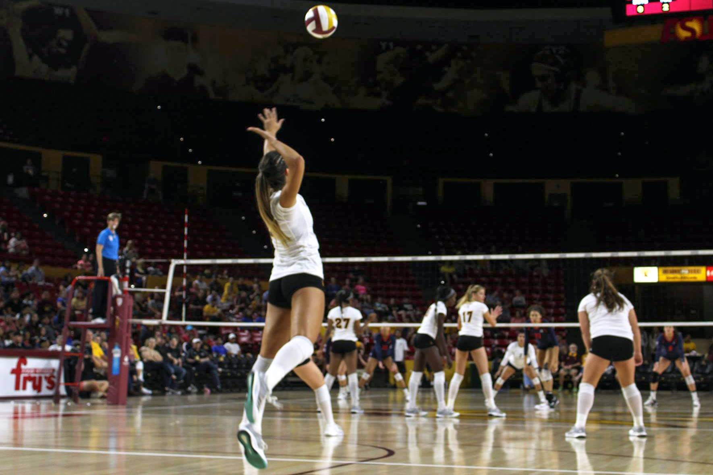
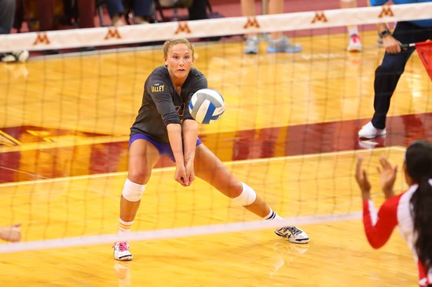
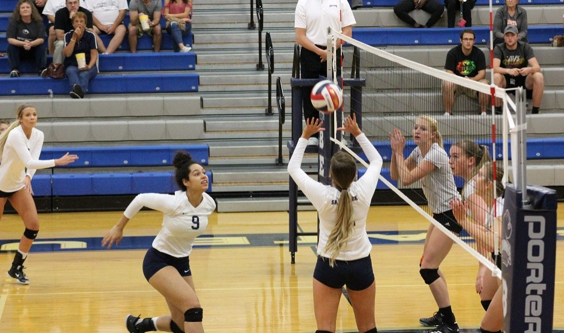
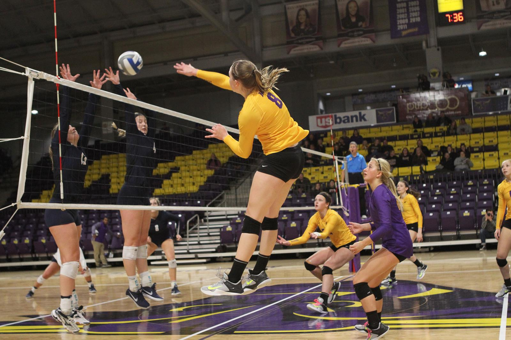
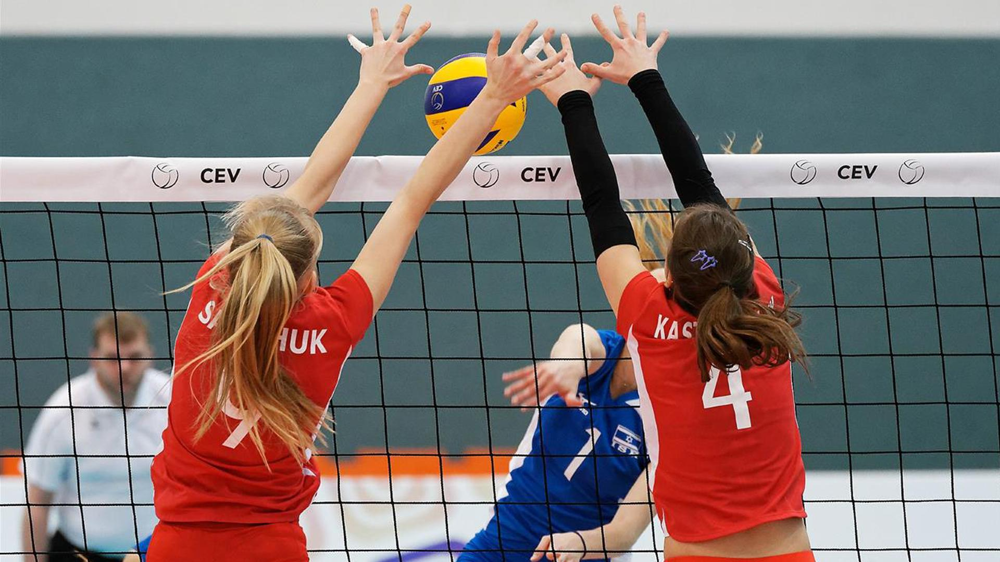

VOLLEYBALL
Est. 1895
Volleyball Skills
Serving
- When you serve, you are tossing a ball in front of you. You then contact the center of the ball with the palm of your hand.
- This skill allows for a game or rally to begin.
- Serving is very important since it starts a game.
- Serving is the only part of the game where you have full control.
- Some types of serves are standing float serve, TopSpin, Jump Float, and Jump TopSpin.

How To Serve Video
Passing
- To pass a ball, your forearms are together, creating a platform. To get the perfect pass, the ball must contact that platform
and you should use your legs to allow the ball to go higher.
- Passing is also a very important skill.
- A play always begins with a pass.
- If there is no pass, then the setter cannot set up the hitter to attack the ball.

How To Pass Video
Setting
- Setting is also called overhead passing.
- To set a ball, your hands should be above your forehead and they should be the shape of the ball. Your should contact the ball
with your fingertips and push out
- Setting sets up the hitter to attack a ball.

How To Set Video
Hitting
- When you hit a ball, you take an approach and jump up to hit the ball above the height of the net. The ball should be hit down
to court.
- Hitting is usually the third touch and should go over the net.

How To Hit Video
Blocking
- Blocking is an attempt to prevent the opponent's hit to come over the net.
- When you block, you should be inline with the hitter and jump to get your hands above and over the net.
- Blocking also helps take off the speed of the hit and helps the backrow players to pass the ball.

How To Block Video